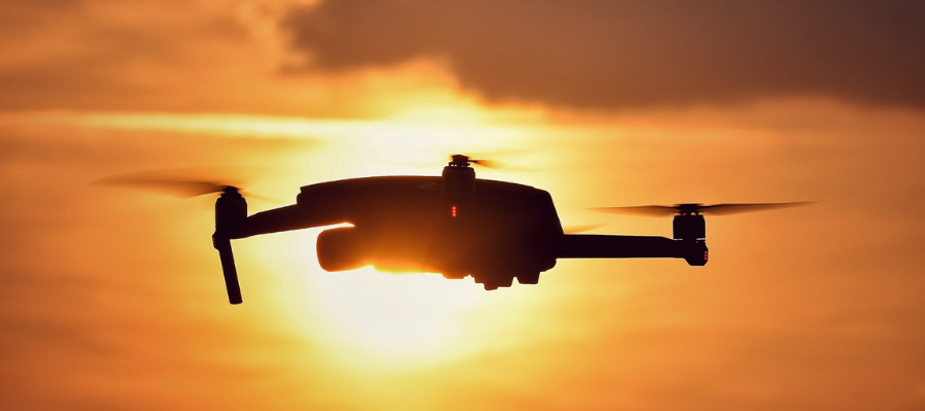

Introduction
Drones are not new anymore for the world. Last 5 years have seen a massive surge of news on drones and drone startups. Some founders managed to get funding for this experimental industry around the world. It's hard to say goodbye after giving your heart
and soul to your startup but sometimes letting go helps in restarting again. In the spirit of failure, I dug into some data on drone startup death and found that 60% of upstart drone companies fail around 20 months after first raising
funds, reasons being aplenty. Of all the Drone startups that have failed, I have mentioned a few of them below. These startups did not fail primarily because of the hurdles posed by the governments and regulatory bodies of various
countries. Like any other tech startup, they failed purely because of lack of team work, being over ambitious, overrated, assumptions and unwanted engineering. Any business must always work from the customer’s point of view and aim
to solve a problem with a price tag affordable to that of the customer. I am writing down and naming some of the drone startups that made waves of futuristic promises and somehow failed to keep them up. Venture capitalists poured $2.6
billion into drones from the beginning of 2012 to June 2019, according to Teal Group, an industry researcher.
Airware- Airware made cloud software system that helped enterprise customers like construction companies, mining operations, and insurance companies reviewing equipment for damages to use drones to collect and analyze
aerial data. In Sep 2018 the management suddenly informed employees it will cease operations immediately despite having raised $118 million from top investors like Andreessen Horowitz, Google’s GV, and Kleiner Perkins. The startup
ran out of money after trying to manufacture its own hardware that couldn’t compete with drone giants like China’s DJI. The company at one point had as many as 140 employees, all of which went out of a job.

Image Courtey: VentureCapGraphic (In Million USD)
-
ReachRobotics - The consumer robotics sector is an inherently challenging space - especially for a start-up. Over the past six years, we have taken on this challenge with consistent passion and ingenuity.
From the first trials of development to accelerators and funding rounds, we have fought to bring MekaMon to life and into the hands of the next generation of tech pioneers. The startup CEO said, I am immensely proud of what
we have achieved. Since founding Reach Robotics at the Bristol Robotics Laboratory, we made huge strides in our technology both in terms of our hardware and app development. We took MekaMon from prototype to market, introduce
the world to the first gaming robot with seamless AR integration, launched in dozens of territories and developed a unique education offering that will live on through many initiatives.
-
Oryx Vision - Israel-based lidar startup Oryx Vision made the unusual move this year to preemptively shut down its operations — not due to running out of funds, as is frequently the case, but because the founders
saw the roadblocks ahead of them in the autonomous vehicle space and decided that Oryx was not equipped to survive into the future. Oryx Vision will be returning approximately $40M to investors as part of this decision.
-
Aria Insights - Formerly known as CyPhy Works, has shut down, The Robot Report has learned. Danvers, Mass.-based Aria Insights raised $39 million over seven funding rounds, according to Crunchbase. The last
funding came in June 2018 when it raised $4.6 million in debt financing. The company was primarily known for its Persistent Aerial Reconnaissance and Communications (PARC) platform, a tethered drone that provided secure communication
and continuous flight to customers. It relied heavily on law enforcement and military contracts. Aria was also marketing the PARC drone to oil and gas, first responders and telecommunications customers.
-
Parrot - Parrot closed down its toy manufacturing drone units. The company’s revenue from the commercial sector increased by 5 percent in 2018, but overall revenues were down 28 percent compared to 2017. In
2018, Parrot made some notable moves to bolster its new B2B focus. The company struck a deal with the US military in May that year, and it continued to iterate its Anafi drone for more commercial purposes. The shift away from
consumer drones continued, too. In the first quarter of 2019, the company’s consumer drones only accounted for 38 percent of its overall revenue, down from 58 percent in the first quarter of 2018 which resulted in closing down
its operations.
-
GoPro - GoPro quits the drone business. The $799 Karma drone was first unveiled in late 2016, but proved to be an unfinished and expensive product. All Karma units were recalled in November that year after
a fault caused the aircraft to lose power, while reviewers compared the drone unfavorably to rival devices by companies like DJI. GoPro subsequently lost $373 million in 2016, although its financials did improve a little in
2017. In Jan 2018 it finally ended its drone business.
-
3DR - 3DR failed as a consumer business. One of the biggest challenges 3DR faced with their Solo drone was stiff competition, primarily from Chinese-based DJI. The real war between 3DR and DJI (and Parrot
too, to some extent) was around pricing. As 3DR’s President Jeevan Kalanithi put it back in June, and as we’ve already described in greater detail above, “We got knocked down for a really simple reason: We made too many Solos,
especially given how fast our competitors dropped prices and flooded the market.”
-
Droni aka Indian Academy of Drones - This Indian startup was aggressive and in a rush to make money and with good backing from Eagle Group raised $500K in seed funding and went out of operations in less than
18 months from their drone training business. Their last mention of training programs stopped from June 2020 on their company website. Unlike DartDrones, who got funded by SharkTank’s Mark Cuban with $350K in 2015 with their
continuing growth in the same space of drone operator training, this company seemed to have management issues before they wound up the drone training business in India. Other players in this segment continue to survive and
some are growing despite tough regulatory frame work in India.
-
Facebook’s Aquila - Facebook announced in a blog post that it would no longer build the drones. The company said that it was still committed to the original goal of bringing more people online, but that it
would instead rely on other companies to build aircraft. A plant in western England where the planes were being manufactured will be closed. But the drone initiative, Project Aquila, suffered several setbacks. One test flight
ended with a crash landing and a broken wing. The initiative fell under the company’s Internet.org project to expand internet access in underdeveloped parts of the world, a controversial effort that critics called a ploy by
Facebook to get new users.
-
Lily Camera - The company launched in mid-2015 with a promotional video of a breathtaking new gadget — in this case, a camera drone that automatically follows you around. It fetched millions of dollars worth
of preorders, raised money from top-tier technology investors and hit unexpected snags leading to inevitable delays. Then, on Jan. 12, 2017, it announced it was shutting down before shipping a single device it sold. Despite
lack of support from various regulatory bodies, some companies like Zipline continue to raise their next round of funding and have been able to sustain the business and growth. The Chinese giant DJI has also suffered in 2020
with some internal employee frauds and political issues with US and European governments that has led to some turbulent waters in its financial health. They announced last to become a Unicorn; however that dream still seems
to be far from reality. Some companies in India and South East Asia have bootstrapped and are walking slowing with bare minimum revenues to sustain the business. To conclude, investors need to understand that ROI on drones
will come not less than 4 years from the day they write their cheques for drone startups. But surely the returns will come.
-
About the Author: - John Livingstone is the Founder of Johnnette Technologies and Indian Institute of Drones. After serving in the Indian Navy for a decade as a Certified Drone Pilot, he started his business
ventures in 2014 and both his companies are bootstrapped with a steady growth. He holds records for being the fastest trained Military Drone Pilot and the only Naval officer to be awarded at UAV tetra School at Indian Air Force
in 2007. Under his leadership, Johnnette has won 4 awards in 2015, 2017, 2019 and 2020. He is the product architect for all Drones made at Johnnette as well as Test Pilot for Heavier Drones. To his credit, he has written 2
Books on Drones and he continues to write more. Alongside being one of the most prominent names in the Drone Industry, his other passions include playing guitar, cooking and fitness.